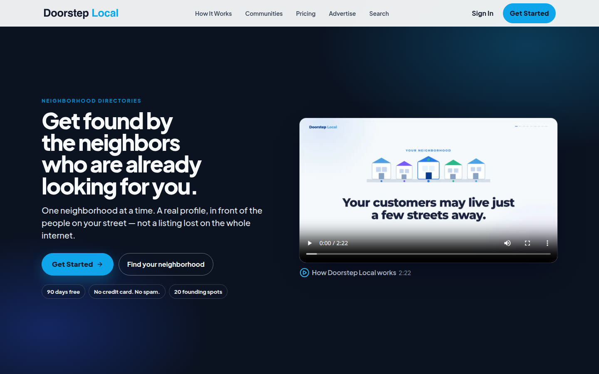
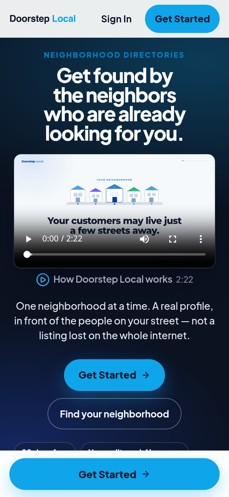

Selected Work / Case Study № 02
neighborhood directories · custom website
Doorstep Local · doorsteplocal.com
Get found by the neighbors who are already looking for you.
One neighborhood at a time. A real profile, in front of the people on your street — not a listing lost on the whole internet.

The Brief
You're invisible where it matters most.
The places you show up today were built for search engines and shareholders, not for your street.
Line on the live homepage90 days free for founding members. The first 20 spots in each neighborhood are open. Your 90 free days start on launch day. No credit card. No spam.
The review prototype at doorsteplocal.clientreview.co uses a different headline and says 90 days free for the first 30 founders, then $29/mo. This page follows the live site linked from the work grid.
02 — Identity
Tokens from the stylesheet
Swatches are the live site's data-theme=light tokens. The logo file logo-dark.svg uses #0f172a and #0ea5e9. The prototype stylesheet records a different primary, #0284c7. Those are separate sources and are not combined into one palette.
Color
Primary
--color-primary#005f13
Secondary
--color-secondary#064180
Accent
--color-accent#31aa40
Surface
--color-base-100#ffffff
Text
--color-base-content#051223
Type
Aa Bb
ABCDEFGHIJKLMNOPQRSTUVWXYZ · abcdefghijklmnopqrstuvwxyz · 0123456789
Plus Jakarta Sans · named on the live page and in the prototype font link
Logo
File logo-dark.svg from the live site.

Screenshot pending — content needed
A second mobile screen was not in the prototype files or this repo. The Hive study shows two phones. This page has the one homepage capture stored for the work grid.
03 — Mobile
Homepage on a phone
The phone frame is the homepage screenshot stored with this work page.
Results pending — content needed
No load time or before-and-after figure is in a project guide or scope file. Numbers that appear above are lines printed on the live homepage, not a measured outcome of this page.
04 — In Detail
Lines from the live homepage
Screenshot pending — content needed
Section crops were not in the source files. The three notes below are homepage lines, not separate screenshots.
Homepage
Your listing is a ghost town
A name and a phone number. Nothing that gives a neighbor a reason to choose you.
Homepage
Built for the whole internet
You line up next to every business in the country. The people on your street never see you.
Homepage
Easy to scroll past
A tiny logo and a generic profile. Neighbors move on before they ever call.
Quote pending — content needed
No named quote or testimonial was copied. Homepage review counts, where the site prints them, stay in the brief as the site's own line.
05 — The long scroll
Homepage viewport
The image is the homepage capture already in this repo. It is the top of the page, not a stitched full-page scroll.
Screenshot pending — content needed
A full-page scroll capture is not in the source files.